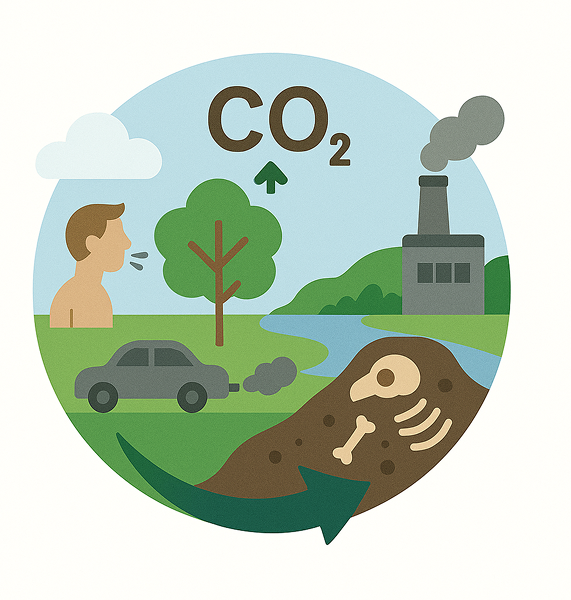
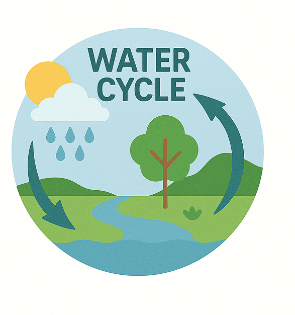
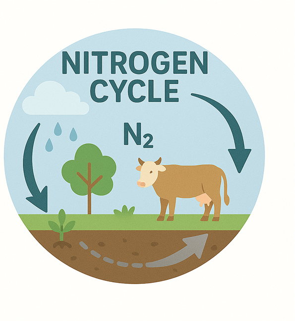
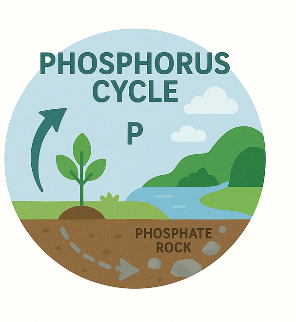

Ciclos
O que são ciclos Biogeoquímicos?
São processos naturais que garantem a circulação de elementos químicos essenciais à vida (como água, carbono, nitrogênio e fósforo) entre os seres vivos e o ambiente.
Todos os ciclos seguem um padrão
Os elementos circulam entre os seres vivos e o ambiente.

Ciclo do carbono
- Fotossíntese: Plantas absorvem CO₂.
- Respiração: Animais e seres humanos liberando CO₂ na respiração.
- Decomposição: Animais e plantas morrendo e virando matéria orgânica no solo.
- Combustão: Queima de combustíveis fósseis (carros, fábricas) liberando CO₂
Importância: Sem ele, não haveria fotossíntese e nem respiração celular.

Ciclo da água
- Evaporação: o calor do sol faz a água dos rios, lagos e oceanos virar vapor.
- Condensação: o vapor sobe, esfria e forma nuvens.
- Precipitação: a água volta para o solo em forma de chuva, granizo ou neve.
- Infiltração e escoamento: parte da água penetra no solo e parte vai para rios, lagos e oceanos.
- Transpiração: plantas também liberam vapor d’água pelas folhas.
Importância: Regula o clima, distribui a água e mantém todos os seres vivos hidratados e funcionando.

Ciclo do nitrogênio
- Fixação: bactérias no solo transformam o N₂ do ar em amônia.
- Nitrificação: a amônia vira nitrato, forma absorvível pelas plantas.
- Absorção: plantas usam o nitrato para crescer.
- Decomposição: seres vivos mortos devolvem nitrogênio ao solo.
- Desnitrificação: bactérias transformam o nitrato de volta em N₂ e liberam na atmosfera.
Importância: Permite a formação das proteínas e DNA, essencial para todos os seres vivos.

Ciclo do fósforo
- Erosão: o fósforo sai das rochas para o solo.
- Absorção: plantas absorvem o fósforo pela raiz.
- Transferência: animais obtêm fósforo ao comer plantas.
- Decomposição: quando morrem, o fósforo volta ao solo.
- Sedimentação: parte do fósforo se acumula no fundo de rios e oceanos.
Importância: Essencial para a formação de ossos, dentes, ATP (energia celular) e ácidos nucleicos (DNA e RNA).